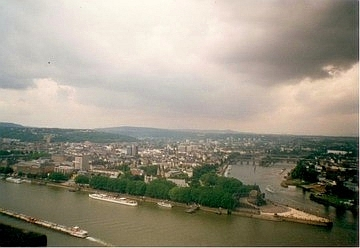
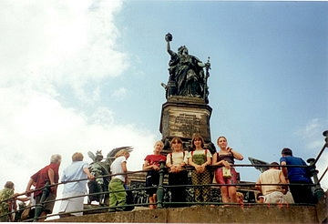

Крым. |
|
|
Крым
похож на яхту, дремлющую на приколе. Связанный с континентом узким
мостиком Перекопа, он словно покачивается на волне. Кажется вот-вот
затрепещет над ним огромный парус и полуостров отчалит в голубую дымку
Черного моря. На Ангарском перевале катаются лыжники, а в Ялте доцветают розы... На Южном берегу Крыма витает специфический запах магнолий, а в горах только-только распустились фиалки... Так причудливо сплетаются в Крыму времена года. И можно прикоснуться к любому из них, медленно поднимаясь от знойных пляжей к заоблачным вершинам гор. Крым
богат. Крым популярен. Два этих обстоятельства
чуть было не стали роковыми для его природы. В начале ХХ века хищнецки
вырубались неповторимые крымские леса - хранители воды, которой очень
мало на полуострове, истреблялись животные. В начале тридцатых годов в
горном Крыму насчитывалось примерно шесть оленей. Требовались самые
срочные и действенные меры. Начинаются
леса заповедного Крыма молодыми
смешанными рощами, с густым подлеском, плотно перепутанными
непроходимой колючей ежевикой. Выше - дубравы, в которых попадаются 200
- 250-летние великаны. Можно повстречать диких кабанов, которые с
удовольствием поедают жёлуди. Ещё выше - чистые, немного даже
торжественные буковые леса. Здесь прохладно и сумрачно, пепельно-серые
ровные стволы стоят величественной колоннадой. Обычное дерево горного
Крыма - сосна, но она отличается от северных своих сестёр: ветер часто
причудливо формирует её крону, зелень её ярче. Но совершенно удивителен
запах крымских сосен. Напоенный смолистым араматом воздух горных лесов
Крыма ещё в XIX веке называли "бальзамическим"
Но вернёмся в лес. Прислушайтесь: хрустальный звон,
робкий голосок крошечного ещё родничка. Он весело переливается по
уступам, образуя миниатюрные водопады, сияя маленькими радугами. Нет
ничего вкуснее этой воды, вытекающей из сердца древней земли. Лес
бережёт родники. Здесь берут своё начало реки Кача, Альма, Улу-Узень.
Они невелики, но их значение для безводного Крыма трудно
переоценьть.Порой эти реки бывают страшны...
Вздуваются они от обильных ливней и несутся с шумом в долины,
превращаясь в мутные потоки, сметая всё на своём пути, коварно меняя
русло...
|
|
|
Kinder zu Gast in Deutschland |
Германия. |
|
 
|
Германия является страной, одной из первых предложившей свою помощь
пострадавшему от катастрофы на ЧАЭС народу Белоруссии. Северный Рейн-Вестфалия самая не историческая федеральная земля Германии, зато она одна из немногих может похвастаться наличием вполне конкретного дня рождения: эта область на западе страны Германии была искусственно образована решением британской военной администрации 23 августа 1946 года путем слияния северной половины прусского Рейнланда, провинции Вестфалия и земель старинного княжества Липпе-Детмольд. О прародителях напоминает герб федеральной земли: старый символ Вестфалии - стоящий на дыбах саксонский конь, серебренная полоска Рейна на зеленом фоне и красная роза, символизирующая Липпе-Детмольд. Это самая промышленная область страны, ведь здесь расположен Рур, где в свое время добывалась половина всего европейского угля и выплавлялась практически треть всей стали в Европе. Но в 60-х годах минувшего века немцы серьезно озаботились проблемой экологии и благодаря предпринятым усилиям купол неба над Северным Рейном - Вестфалии вновь поражает своей голубизной. Теперь на этих землях расположено 14 природных заповедников. Благодаря промышленному развитию этих земель, Северный Рейн-Вестфалия может похвастаться и наличием прекрасных дорог (общая протяженность трасс - 29,7 тысячи километров), о которых путешествующие автомобилисты говорят исключительно в превосходной степени. Здесь есть не только современные высокоскоростные магистрали, но и значительное число федеральных и местных дорог, мало чем уступающих автобанам по удобству и безопасности. Не хуже в этой федеральной земле развито железнодорожное (6,6 тысячи километров путей), водное (в Северном Рейне-Вестфалии расположен крупнейший речной порт Европы Дуйсбург) и авиасообщение (6 международных аэропортов). Административным
же центром Северного Рейна-Вестфалии
является шестисоттысячный Дюссельдорф. Именно здесь располагается
резиденция федерального правительства.
Немцы с гордостью заявляют, что в этом городе проживает
больше ювелиров и миллионеров, чем в любом другом месте Германии. В
Дюссельдорфе расположен самая шикарная торговая улица Германии
–
бульвар Кенигсаллее, и самый длинный прилавок мира –
исторический
центр города. На
месте миллионного Кельна во времена Древнего Рима находилось поселение,
основанное Агриппиной, матерью римского
императора Нерона. Северный
Рейн-Вестфалия может похвастаться наличием около
350 музеев и свыше 70 театров, где ежедневно бывает до 12 миллионов
посетителей. Не
менее трогательно здесь относятся и к литературным
памятникам. Редкий турист отказывает себе в удовольствии отправиться
на экскурсию по Рейну, чтобы сфотографироваться возле скалы, на
которой расчесывала волосы знаменитая Лорелея Генриха Гейне. |
|
Sharm El Sheikh |
Египет. |
|
|
Шарм-эль-Шейх (также употребляется название Шарм-эш-Шейх) — город-курорт в Египте на южной оконечности Синайского полуострова на побережье Красного моря. В последнее время курорт приобретает всё большую популярность среди туристов. В переводе с арабского Шарм-эль-Шейх — «Царский Залив», или «Бухта Шейха». Шарм-эль-Шейх расположен в бухте Наама Бей, что в переводе с арабского означает «Бухта старого человека», или «Бухта старейшины». Географическое положение города довольно уникально: с юго-запада он граничит с морским национальным парком Рас-Мохаммед, на северо-востоке — с национальным заповедником Набк, с северо-запада прикрыт от ветров и непогоды величественной грядой Синайских гор, а с юго-востока омывается Красным морем, природа которого создала в этом месте живописнейшие пляжи. В 80 км от города расположена Гора Моисея (самая высокая вершина Синайских гор). В часе езды на автобусе вдоль Акабского залива — город Дахаб, в двух — пограничный город Таба, а далее — порт Эйлат, территория Израиля. Климат в Шарм-эль-Шейхе благоприятный. Несмотря на то, что зимой ночные температуры могут опускаться до +15 градусов, и временами дует достаточно сильный ветер, днём солнце достаточно прогревает воздух и напоминает о том, что Шарм-эль-Шейх всё же является тропическим курортом, и многочисленные посетители пляжей с удовольствием загорают и купаются. Летом столбик термометра доходит до +40 градусов, однако, очень низкая влажность воздуха позволяет переносить жару достаточно легко. Температура воды в Красном море в районе Шарм-Эль-Шейха не опускается ниже 20 градусов, даже зимой. В летние месяцы море прогревается вплоть до 30 градусов. Дожди в Шарм-эль-Шейхе крайне редки, воздух сухой и теплый в любое время года. Исторически город не
подвергался сплошной единовременной застройке, и поэтому растёт путем
развития множества различных архитектурных
«оазисов». Через все них проходит главная улица
города — проспект Peace Road, соединяющая раскинувшийся вдоль
берега моря город в единое целое. Город-курорт состоит из нескольких
районов, построенных вдоль побережья, вокруг основных заливов (бухт). Что касается
достопримечательностей, то их в окрестностях Шарм Эль Шейха достаточно
много. Монастырь Святой Екатерины и известная часовня Неопалимой купины
представляют собой наиболее популярные места посещения туристов,
приехавших на Синай. Монастырь разместился возле Синайской горы. По
легенде в этом месте Моисей получил скрижали, содержавшие десять
заповедей. Ежедневно многие паломники из всех стран мира восходят на
гору, чтобы увидеть рассвет, после созерцания которого, по поверью,
отпускаются все грехи. Шарм-эль-Шейх
— это оптимальное место для обучения дайвингу.
Дайвинг-центров в Хургаде огромное количество, во многих из них
работают русские инструктора. На курорт для погружения приезжает
огромное количество дайверов со всего мира. Шарм Эль Шейх не
слишком ориентирован на спокойный семейный отдых, так что, скорее,
больше подходит для молодёжи, что, в свою очередь, и объясняет довольно
бурную ночную жизнь курорта. Основной центр тусовок расположен в районе
центральной бухты Наама Бей, где пролегает главная улица Шарм Эль
Шейха, заполненная шумными кафе, ресторанами, магазинами, отелями и
ночными клубами. В Наама Бей можно, помимо всего прочего, заглянуть в
казино и потягаться с фортуной либо побросать шары в местном
боулинг-клубе. Однако особой популярностью пользуются ночные клубы
Наама Бей, неизменно привлекающие огромное количество туристов, которых
хлебом не корми — дай повеселиться. В Наама Бей есть
несколько самых посещаемых ночных клубов.
|